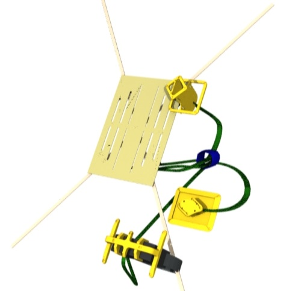

Object Pre-Positioning
Place the objects as shown to prepare for experiment execution:
- Temp stow the Virtual Reality Headset, the Hand Marker Support and the Chest Marker Support to the right side of the Floating Backrest as shown:

- Ensure that the Marker Array Cables and VR Headset Cable pass behind the Floating Backrest.
Press 'Next' to continue.